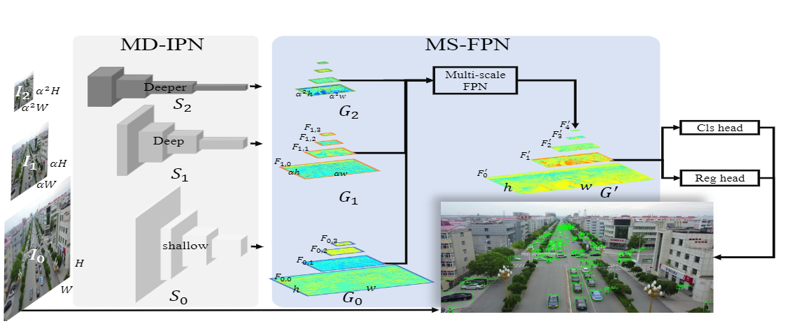
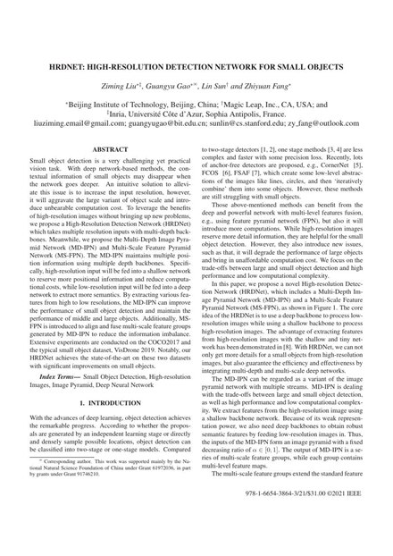

HRDNet: High-Resolution Detection Network for Small Objects

Abstract
Small object detection is a very challenging yet practical vision task. With deep network-based methods, the contextual information of small objects may disappear when the network goes deeper. An intuitive solution is to increase the input resolution; however, this aggravates the large variance of object scale and introduces unbearable computation cost.
To leverage the benefits of high-resolution images without bringing up new problems, we propose a High-Resolution Detection Network (HRDNet) which takes multiple resolution inputs with multi-depth backbones. We propose the Multi-Depth Image Pyramid Network (MD-IPN) and the Multi-Scale Feature Pyramid Network (MS-FPN). MD-IPN maintains multiple position information using multiple depth backbones: high-resolution input is fed into a shallow network to reserve more positional information and reduce computational cost, while low-resolution input is fed into a deep network to extract more semantics. MS-FPN aligns and fuses the multi-scale feature groups generated by MD-IPN to reduce information imbalance.
Extensive experiments are conducted on COCO2017 and on the typical small object dataset VisDrone 2019. HRDNet achieves state-of-the-art results on both datasets with significant improvements on small objects.
Paper

Ziming Liu, Guangyu Gao, Lin Sun, Zhiyuan Fang.
HRDNet: High-Resolution Detection Network for Small Objects.
IEEE International Conference on Multimedia and Expo (ICME), 2021.
BibTeX
@inproceedings{liu2021hrdnet,
title = {HRDNet: high-resolution detection network for small objects},
author = {Liu, Ziming and Gao, Guangyu and Sun, Lin and Fang, Zhiyuan},
booktitle = {IEEE International Conference on Multimedia and Expo (ICME)},
pages = {1--6},
year = {2021},
organization = {IEEE}
}Acknowledgements
Supported mainly by the National Natural Science Foundation of China under Grant 61972036, and in part by grants under Grant 91746210.